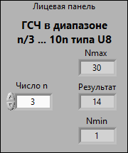
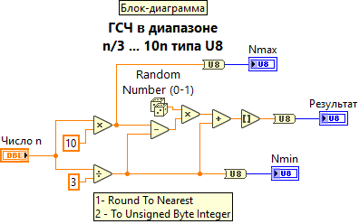

Для выполнения задания создан виртуальный прибор(ВПП), генерируюий случайные числа типа U8 в диапазоне, определяемым формулой n/3...10n. Предельные значения данного диапазона Nmin и Nmax зависят от значения числа n, вводимого в элемент управления "Число n".
При правильном выполнении данного ВПП, после ввода числа n и после запуска ВПП щелчком по кнопке "Run" на индикаторах Nmin и Nmax должны отобразиться предельные значения заданного диапазона случайных чисел, а на индикаторе "Результат" должно появиться случайное число из заданого диапазона.
